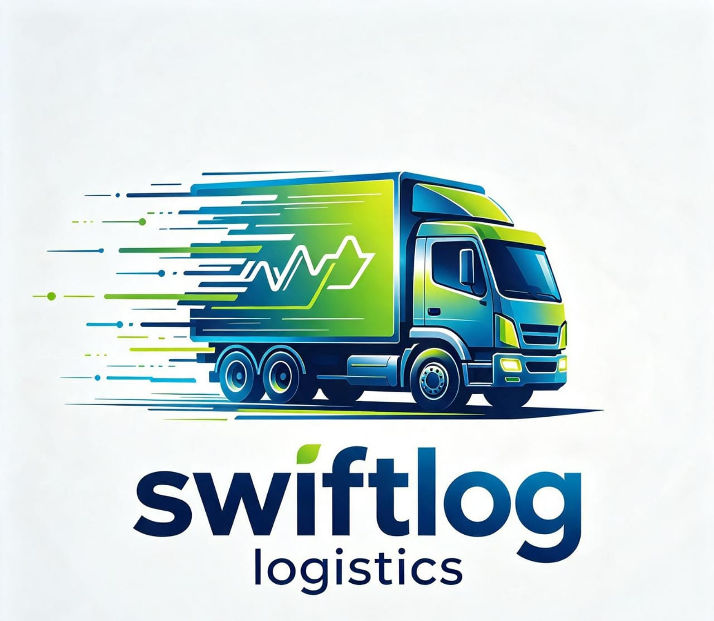
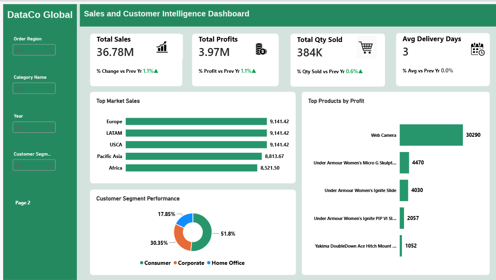

This project uses SQL to analyze customer behaviour and buying patterns using customer and order data. The analysis focuses on customer purchasing frequency, revenue contribution, product categories, geographic performance, membership tiers, quantity sold, and acquisition channels.


This is an end-to-end business intelligence project focused on understanding e-commerce operations, customer behaviour, product performance, inventory management, and delivery efficiency.
.jfif)
FinTrust Digital Bank is a digital banking business seeking to better understand its transaction activity, customer behaviour, transaction channels, risk patterns, and operational performance. This project presents an end-to-end analysis of FinTrust's transaction data, moving from initial business questions and data quality assessment through SQL analysis, Python exploratory data analysis (EDA), and Power BI dashboard development.

This is a data cleaning project of layoffs done by companies all around the world from the year 2020 to 2023. It contains 2361 records of various companies, showing 9 columns, which include: Company, location, industry, location, total laid off, percentage laid off, date, country, funds raised millions.

The dashboard provides an overview of the company's sales performance, profitability, customer segments, product performance, regional sales, and delivery operations.The objective is to transform sales data into meaningful business insights that can support better decision-making, improve operational efficiency, and identify opportunities for business growth.
